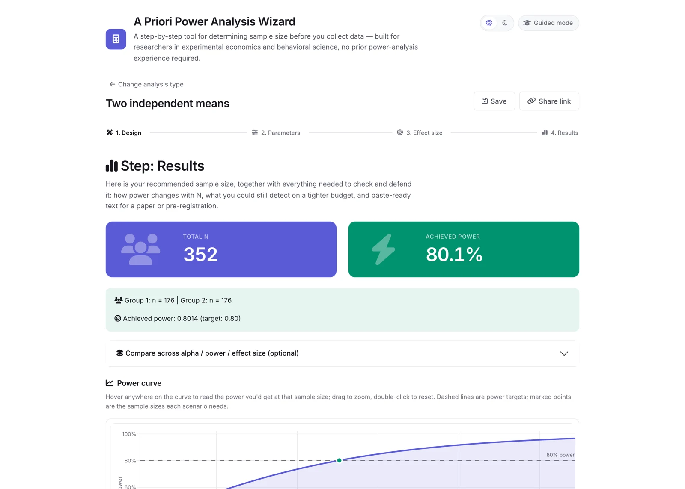

Built for research · Free & open source
A Priori Power Analysis Wizard
From your research question to the sample size you need.
Plan your experiment before collecting data. Built for experimental economics and behavioral science, this browser-based tool guides you through choosing an analysis, setting your assumptions, and justifying your sample size — no installation required.

An example results screen: sample size, achieved power, and how power changes with your sample.
Find the right analysis
Choose from 16 analysis families or use the plain-language decision helper to match your research design.
Make assumptions explicit
Justify effect sizes, account for attrition and multiple comparisons, and explore what your budget can detect.
Take the results with you
Explore power curves and export an HTML report with method citations for your paper or preregistration.